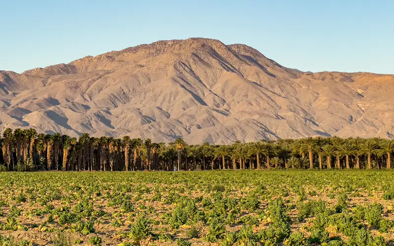

Búsqueda y filtros
Cargando la lista…
Despensas de comida, mercados móviles y comidas calientes. Busque o filtre, y luego llame o vea cómo llegar.
FIND Food Bank: revisado el 20 nov 2026

Cargando la lista…
FIND Food Bank mantiene la lista de lugares y el calendario mensual del Mercado Móvil. Pueden ayudarle si un lugar no tiene número de teléfono o si no sabe a dónde ir.
Llamar al (760) 775-3663Horario de teléfono: de lunes a viernes, de 8 AM a 4:30 PM.